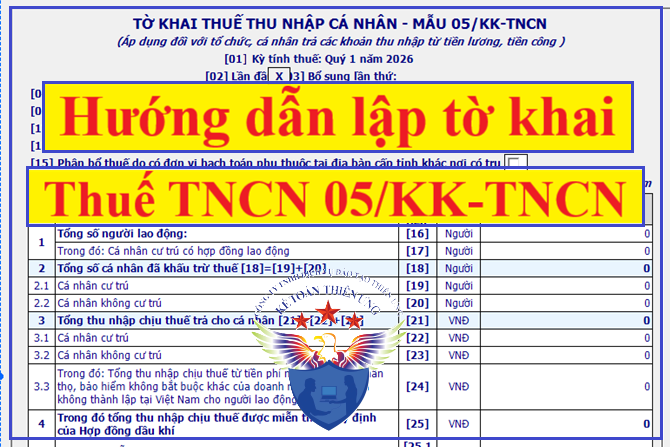
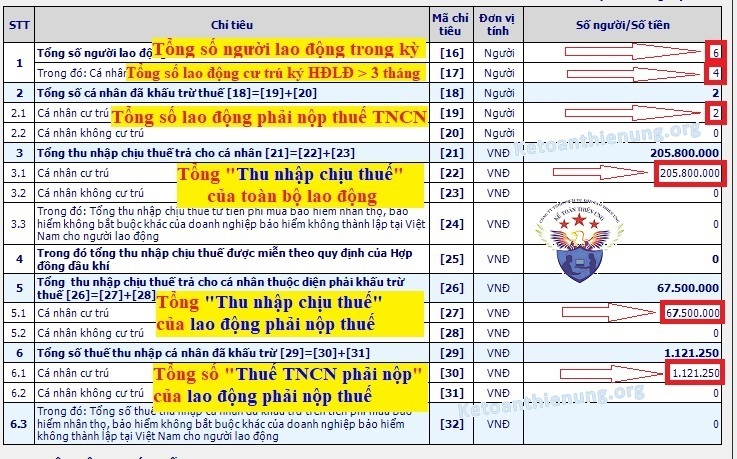

Hướng dẫn lập tờ khai thuế thu nhập cá nhân theo quý – tháng năm 2026; Cách lập tờ khai thuế TNCN 05/KK-TNCN chi tiết từng chỉ tiêu - cách làm tờ khai thuế TNCN trên phần mềm HTKK mới nhấp.
Những Lưu ý trước khi lập tờ khai thuế TNCN 05/KK-TNCN:1. Bài viết này Kế toán Diệu Tâm hướng dẫn lập tờ khai thuế thu nhập cá nhân mẫu 05/KK-TNCN -> Là tờ khai dành cho tổ chức, cá nhân trả các khoản thu nhập từ tiền lương, tiền công nhé (Nghĩa là hướng dẫn cho DN kê khai thuế TNCN cho nhân viên trong DN mình nhé).
---------------------------------------------------------------------
2. Phải xác định được DN bạn kê khai thuế TNCN theo Qúy hay theo Tháng (Xác định sai -> Nộp sai là bị phạt chậm nộp Tờ khai, không nộp tờ khai đó nhé).- Nếu DN kê khai thuế GTGT theo tháng thì kê khai thuế TNCN theo tháng.
- Nếu DN kê khai thuế GTGT theo quý thì kê khai thuế TNCN theo quý.
=> Chi tiết cách xác định đối tượng kê khai thuế TNCN theo quý – tháng ...
---------------------------------------------------------------------
3. Nếu trong tháng/quý nào Có phát sinh khấu trừ thuế TNCN thì Phải nộp Tờ khai thuế TNCN tháng/ quý đó.- Nếu Không phát sinh khấu trừ thuế TNCN -> Thì tháng/quý đó Không phải nộp Tờ khai thuế TNCN.
Nghĩa là:
- Nếu trong tháng/quý không có nhân viên nào phải nộp Thuế TNCN -> Thì tháng/quý đó Không phải nộp Tờ khai.
- Nếu có nhân viên phải nộp thuế TNCN -> Thì tháng/quý đó phải nộp Tờ khai.
(theo Nghị định 91/2022/NĐ-CP có hiệu lực từ ngày 30/10/2022).
---------------------------------------------------------------------
4. Phải Tính thuế và kê khai thuế TNCN cho tất cả các nhân viên mà DN đã trả lương trong quý hoặc tháng -> Kể cả lao động thử việc, thời vụ, giao khoán, thuê dịch vụ cá nhân … (Những khoản có tính chất tiền lương, tiền công)Ví dụ: Kế toán Diệu Tâm kê khai thuế TNCN theo Quý.
- Trong tháng 1 (thuộc quý 1/2026) Cty có trả lương cho 4 nhân viên ký hợp đồng lao động dài hạn; 1 lao động thử việc; 1 lao động thời vụ.
=> Thì Cty phải tính và kê khai thuế TNCN cho 6 người lao động.
(Nếu không có nhân viên nào phải nộp thuế TNCN thì Không phải nộp Tờ khai thuế TNCN quý 1/2026 - Còn nếu có nhân viên phải nộp thuế TNCN thì phải nộp Tờ khai thuế TNCN quý 1/2026).
---------------------------------------------------------------------
5. Đối với DN kê khai thuế TNCN theo quý:- Thì số thuế TNCN phải nộp sẽ bằng Tổng số thuế TNCN đã khấu trừ từng tháng cộng lại (Không được cộng Tổng rồi chia bình quân tháng để tính).
=> Cuối năm khi quyết toán mới Cộng Tổng rồi chia bình quân tháng để tính lại
Ví dụ: Kế toán Diệu Tâm kê khai thuế TNCN theo Qúy, và trong Qúy 1/2026 có phát sinh như sau:
- Tháng 1 có 4 nhân viên phải nộp thuế TNCN, tổng phải nộp là: 1.200.000.
- Tháng 2 có 5 nhân viên phải nộp thuế TNCN, tổng phải nộp là: 1.400.000
- Tháng 3 có 6 nhân viên phải nộp thuế TNCN, tổng phải nộp là: 1.600.000
=> Tổng số tiền thuế TNCN phải nộp Qúy 1/2026 là:
= 1.200.000 + 1.400.000 + 1.600.000 = 4.200.000.
Xem thêm: Cách tính thuế thu nhập cá nhân.

--------------------------------------------------------------------
Hướng dẫn lập tờ khai thuế TNCN 05/KK-TNCN chi tiết:
Bước 1: Lập tờ khai thuế TNCN 05/KK-TNCN trên phần mềm HTKK:
- Đăng nhập vào phần mềm HTKK (lưu ý phải là phần mềm HTKK mới nhất nhé) => Nếu chưa biết bạn có thể xem tại đây: Phần mềm HTKK mới nhất).
- Đăng nhập xong thì Chọn mục “Thuế thu nhập cá nhân” => "05/KK-TNCN Tờ khai khấu trừ thuế TNCN (TT80/2021)" -> Rồi chọn kỳ kê khai thuế TNCN theo quý hoặc theo Tháng (Như đã nói ở trên phần này rất quan trọng đó nhé).
=> Xong thì màn hình sẽ xuất hiện như sau:
.jpg "cách lập tờ khai thuế thu nhập cá nhân")
Cách làm tờ khai thuế TNCN 05/KK-TNCN như sau:
Chú ý:
- Như đã nói ở trên nếu trong tháng/quý không có nhân viên nào phải nộp thuế TNNC thì Không phải nộp Tờ khai thuế TNCN tháng/quý đó.
- Nếu có nhân viên phải nộp thuế TNCN thì Phải kê khai, nộp Tờ khai thuế TNCN tháng/quý đó (Có nghĩa là sẽ phải kê khai tất cả các nhân viên mà Cty đã trả lương trong tháng/quý đó), cụ thể cách kê khai từng chỉ tiêu như bên dưới đây nhé:
Chỉ tiêu [16]: Tổng số người lao động: Là tổng số cá nhân có thu nhập từ tiền lương, tiền công mà tổ chức, cá nhân trả thu nhập trong kỳ.
Chú ý: Đây là TỔNG số nhân viên mà công ty đã trả lương trong kỳ nhé (Dù là đang làm hay nghỉ việc trong kỳ, dù là thời vụ hay dài hạn thì cộng hết vào đây nhé).
Ví dụ 1: Trong Qúy 1/2026 Kế toán Diệu Tâm có phát sinh lao động như sau:
- Tháng 1 có 4 nhân viên dài hạn, 1 thử việc => Tổng 5 người.
- Tháng 2 có 4 nhân viên dài hạn, (thử việc nghỉ) => Tổng 4 người.
- Tháng 3 có 4 nhân viên dài hạn, 1 thời vụ => Tổng 5 người.
- Mặc dù nhân thử việc đã nghỉ => Nhưng trong kỳ DN đã trả lương cho bạn đó, nên phải nhập bạn đó vào đây nhé => Nhập vào Chỉ tiêu [16] là 6.
-----------------------------------------------------------
Chỉ tiêu [17]: Cá nhân cư trú có hợp đồng lao động: Là tổng số cá nhân cư trú nhận thu nhập từ tiền lương, tiền công theo Hợp đồng lao động từ 03 tháng trở lên mà tổ chức, cá nhân trả thu nhập trong kỳ.Ví dụ 2: Tiếp theo Ví dụ 1 bên trên trong Qúy 1 => Cty có 4 nhân viên là ký hợp đồng lao động từ 3 tháng trở lên => Nên nhập vào đây là: 4
-------------------------------------------------------------------
Chỉ tiêu [18]: Tổng số cá nhân đã khấu trừ thuế: Phần mềm tự động cập nhậtChỉ tiêu [19]: Cá nhân cư trú: Là số cá nhân cư trú có thu nhập từ tiền lương, tiền công mà tổ chức, cá nhân trả thu nhập đã khấu trừ thuế.
Ví dụ 3: Tiếp Ví dụ bên trên: Giả dụ tất cả 6 nhân viên trên đều là cá nhân cư trú và có số liệu như sau:
- Trong 4 nhân viên dài hạn thì có 1 nhân viên phải nộp thuế TNCN.
- Nhân viên thử việc thì ko đủ điều kiện làm cam kết 08 nên đã khấu trừ 10% thuế TNCN.
- Nhân viên thời vụ thì đủ điều kiện làm cam kết 08 nên tạm thời không khấu trừ thuế TNCN.
=> Như vậy: Nhập vào chỉ tiêu [19] là: 1 lao động dài hạn + 1 thử việc = 2
----------------------------------------------------------------
Chỉ tiêu [20]: Cá nhân không cư trú: Là số cá nhân không cư trú có thu nhập từ tiền lương, tiền công mà tổ chức, cá nhân trả thu nhập đã khấu trừ thuế.- Cách xác định cũng như trên Chỉ tiêu [20] nhé => Chỉ khác đây là những cá nhân không cư trú nhé.
Xem thêm: Cách xác định cá nhân không cư trú.
----------------------------------------------------------------
Chỉ tiêu [21]: Tổng thu nhập chịu thuế trả cho cá nhân: Phần mềm tự động cập nhật.Chỉ tiêu [22]: Cá nhân cư trú: Là các khoản thu nhập chịu thuế từ tiền lương, tiền công và các khoản thu nhập chịu thuế khác có tính chất tiền lương, tiền công mà tổ chức, cá nhân trả thu nhập đã trả cho cá nhân cư trú trong kỳ.
Cụ thể cách xác định như sau:
Thu nhập chịu thuế = Tổng thu nhập – Các khoản được miễn thuế.
Lưu ý: Các khoản miễn thuế KHÁC Các khoản giảm trừ nhé.- Các khoản miễn thuế như: Tiền ăn ca, ăn trưa, trang phục, công tác phí, điện thoại, tiền làm thêm giờ, đám hiếu, hỷ …
- Các khoản giảm trừ như: Giảm trừ bản thân, người phụ thuộc, BHXH (Các khoản này được trừ khi xác định Thu nhập tính thuế nhé).
Ví dụ 4: Tiếp các Ví dụ bên trên, tất cả đều là cá nhân cư trú và có số liệu như sau:
- Tháng 1 Nhân viên dài hạn A có lương chính là 14tr, phụ cấp điện thoại 1tr, xăng xe là 1tr, ăn trưa là 700k
=> Thu nhập chịu thuế = 14tr + 1tr xăng xe = 15tr (do phụ cấp điện thoại và ăn trưa là được miễn thuế nên được trừ).
- Giả dụ tháng 2, tháng 3 cũng vậy => Tổng thu nhập chịu thuế của Nhân viên A = 15tr x 3 = 45tr.- Giả dụ 2 Nhân viên dài hạn B, C cũng vậy => Tổng thu nhập chịu thuế của 3 nhân viên dài hạn là: 45tr x 3 = 135.000.000đ.
- Tháng 1 Nhân viên dài hạn D có lương chính là 20tr, phụ cấp điện thoại 1tr, xăng xe là 1tr, ăn trưa là 700k
=> Thu nhập chịu thuế = 20tr + 1tr xăng xe = 21tr.
Giả dụ tháng 2, tháng 3 cũng vậy => Tổng thu nhập chịu thuế của Nhân viên D = 21tr x 3 = 63tr.- Nhân viên thử việc được trả mức lương 4tr và phụ cấp 500k tiền ăn trưa (Do là hợp đồng thử việc nên không được miễn thuế khoản phụ cấp tiền ăn mà tính theo biểu toàn phần. Khi nào Quyết toán thì được tính lại)
=> Tổng thu nhập sẽ là = Tổng thu nhập chịu thuế = 4.500.000đ.
- Nhân viên thời vụ trả lương là 3tr, phụ cấp điện thoại 300k (Cũng xác định như hợp đồng thử việc nhé)
=> Tức là Tổng thu nhập = Tổng thu nhập chịu thuế = 3.3tr (không được miễn thuế khoản tiền điện thoại).
(Mặc dụ đã làm cam kết 08 -> Tức là tạm thời chưa khấu trừ thuế TNCN -> Nhưng bản chất là khoản thu nhập phải chịu thuế TNCN -> Nên vẫn phải kê khai vào chỉ tiêu này nhé. Khi nào đi quyết toán cuối năm thì tính lại và trừ các khoản miễn thuế ra nhé).
Xem thêm: Cách tính thuế TNCN thời vụ thử việc.
Như vậy: Tổng thu nhập chịu thuế mà Cty đã trả cho toàn bộ nhân viên trong quý 1/2026 là:
= 135tr + 63tr + 4,5tr + 3,3tr = 205.800.000đ.
=> Nhập vào Chỉ tiêu [22] = 205.800.000đ
Lưu ý:
- Phải cộng Tổng thu nhập chịu thuế của tất cả nhân viên mà Cty đã trả trong kỳ (Dù có phải nộp thuế hay không phải nộp thuế TNCN thì cũng phải cộng hết vào đây nhé).
-----------------------------------------------------------------
Chỉ tiêu [23]: Cá nhân không cư trú: Là các khoản thu nhập chịu thuế từ tiền lương, tiền công và các khoản thu nhập chịu thuế khác có tính chất tiền lương, tiền công mà tổ chức, cá nhân trả thu nhập đã trả cho cá nhân không cư trú trong kỳ.
Xem thêm: Cách tính thuế TNCN không cư trú.
-----------------------------------------------------------------
Chỉ tiêu [24]: Trong đó: Tổng thu nhập chịu thuế từ tiền phí mua bảo hiểm nhân thọ, bảo hiểm không bắt buộc khác của doanh nghiệp bảo hiểm không thành lập tại Việt Nam cho người lao động.
-----------------------------------------------------------------
Chỉ tiêu [25]: Trong đó Tổng thu nhập chịu thuế được miễn theo quy định của Hợp đồng dầu khí.
--------------------------------------------------------------------
Chỉ tiêu [26]: Tổng thu nhập chịu thuế trả cho cá nhân thuộc diện phải khấu trừ thuế TNCN: Phần mềm tự động cập nhật
Chỉ tiêu [27]: Cá nhân cư trú: Là các khoản thu nhập chịu thuế từ tiền lương, tiền công và các khoản thu nhập chịu thuế khác có tính chất tiền lương, tiền công mà tổ chức, cá nhân trả thu nhập đã trả cho cá nhân cư trú thuộc diện phải khấu trừ thuế theo trong kỳ.
Ví dụ 5: Tiếp theo các Ví dụ bên trên có 6 nhân viên đều là cá nhân cư trú và có số liệu như sau:
- Tháng 1 Nhân viên dài hạn A có lương chính là 14 triệu, phụ cấp điện thoại 1 triệu, xăng xe là 1 triệu, ăn trưa là 700k
=> Thu nhập chịu thuế = 14 triệu + 1 triệu xăng xe = 15 triệu.
Giả dụ Nhân viên A này giảm trừ bản thân 15,5 triệu và giảm trừ BHXH là: 630.000đ
=> Thu nhập tính thuế = Thu nhập chịu thuế - Các khoản giảm trừ
= 15 triệu – 15,5 triệu – 630.000 = (-1.130.000)
=> Tức là không phải nộp thuế TNCN => Tức là không cộng Thu nhập chịu thuế của nhân viên này (15 triệu) vào Chỉ tiêu [27] này (Chỉ nhập vào chỉ tiêu này phần Thu nhập chịu thuế của những nhân viên phải nộp thuế TNCN)
Và 2 nhân viên dài hạn B, C cũng không cộng vào đây nhé (Do 2 nhân viên này cũng không phải nộp thuế TNCN)- Tháng 1 Nhân viên dài hạn D có lương chính là 20 triệu, phụ cấp điện thoại 1 triệu, xăng xe là 1 triệu, ăn trưa là 700k
=> Thu nhập chịu thuế = 20 triệu + 1 triệu xăng xe = 21 triệu
Giả dụ Nhân viên D này giảm trừ bản thân 15,5 triệu và giảm trừ BHXH là: 1.025.000
=> Thu nhập tính thuế = Thu nhập chịu thuế - Các khoản giảm trừ
= 21 triệu – 15,5 triệu – 1.025.000 = 4.475.000.
=> Tức là nhân viên D phải nộp thuế TNCN => Như vậy sẽ phải cộng thu nhập chịu thuế của nhân viên D (là 21 triệu) vào Chỉ tiêu [27] (Tức là phần Thu nhập chịu thuế của những nhân viên phải nộp thuế TNCN).
Giả dụ tháng 2, 3 cũng vậy => Tổng số thu nhập chịu thuế trong quý 1/2026 của nhân viên D là: 21 triệu x 3 = 63 triệu- Nhân viên thử việc được trả mức lương 4 triệu và phụ cấp 500k tiền ăn trưa => Nhưng do không đủ điều kiện làm cam kết 08 nên đã khấu trừ 10% là: 450.000.
=> Như vậy sẽ Cộng vào chỉ tiêu [27] này là: 4.500.000 của nhân viên thử việc. (do nhân viên thử việc này nộp thuế TNCN).
- Nhân viên thời vụ trả lương là 3 triệu, phụ cấp điện thoại 300k đã làm cam kết 08 nên chưa phải nộp thuế TNCN => Nên không cộng thu nhập chịu thuế là 3.3 triệu của nhân viên thời vụ này vào Chỉ tiêu [27] này.
Như vậy: Tổng thu nhập chịu thuế mà Cty đã trả cho những nhân viên phải nộp thuế TNCN trong quý 1/2026 là:
= 63 triệu + 4,5 triệu = 67.500.000đ
=> Nhập vào Chỉ tiêu [27] = 67.500.000đ
------------------------------------------------------------------------
Chỉ tiêu [28]: Cá nhân không cư trú: Là các khoản thu nhập chịu thuế từ tiền lương, tiền công và các khoản thu nhập chịu thuế khác có tính chất tiền lương, tiền công mà tổ chức, cá nhân trả thu nhập đã trả cho cá nhân không cư trú thuộc diện phải khấu trừ thuế trong kỳ.- Các bạn cũng xác định như Chỉ tiêu [27] nhé.
----------------------------------------------------------------------
Chỉ tiêu [29]: Tổng số thuế thu nhập cá nhân đã khấu trừ: Phần mềm tự động cập nhật
Chú ý => Đây sẽ là số tiền thuế TNCN mà DN bạn phải nộp cho cơ quan thuế đó nhé (Sau khi kê khai xong trên Chỉ tiêu này xuất hiện bao nhiêu tiền thì phải đi nộp ngay nhé. Chậm nộp tiền thuế này là bị phạt chậm nộp nhé).
Chỉ tiêu [30]: Cá nhân cư trú: Là số thuế thu nhập cá nhân mà tổ chức, cá nhân trả thu nhập đã khấu trừ của các cá nhân cư trú trong kỳ.
Ví dụ 6: Tiếp theo các Ví dụ trên: Trong quý 1/2026 có 1 nhân viên dài hạn D phải nộp thuế TNCN như sau:
Tháng 1 phải nộp: = 4.475.000đ X 5% = 223.750đ.
Giả dụ Tháng 2 phải nộp: 223.750đ; Tháng 3 phải nộp: 223.750đ => Tổng là: 671.250đ.
- Nhân viên thử việc phải nộp: 450.000đ
Như vậy: Nhập vào Chỉ tiêu [30]: 671.250 + 450.000 = 1.121.250đ.
--------------------------------------------------------------
Chỉ tiêu [31]: Cá nhân không cư trú: Là số thuế thu nhập cá nhân mà tổ chức, cá nhân trả thu nhập đã khấu trừ của các cá nhân không cư trú trong kỳ.
- Các bạn cũng xác định như Chỉ tiêu [30] nhé.
--------------------------------------------------------------
Chỉ tiêu [32]: Trong đó: Tổng số thuế thu nhập cá nhân đã khấu trừ trên tiền phí mua bảo hiểm nhân thọ, bảo hiểm không bắt buộc khác của doanh nghiệp bảo hiểm không thành lập tại Việt Nam cho người lao động.
Chi tiết xem thêm: Chi phí mua bảo hiểm nhân thọ cho nhân viên.
--------------------------------------------------------------
|
Lời Khuyên: Các bạn làm 1 bảng tính thuế TNCN trên file Excel, sau khi làm xong: - Bước 1 Lọc và lấy số liệu ở cột “Thu nhập chịu thuế” của toàn bộ nhân viên để nhập vào Chỉ tiêu [22]. - Bước 2: Lọc và lấy số liệu ở cột “Thu nhập chịu thuế” của những nhân viên phải nộp thuế TNCN để nhập vào Chỉ tiêu [27]. - Bước 3: Lọc và lấy số liệu ở cột “Thuế TNCN phải nộp” của những nhân viên phải nộp thuế để nhập vào Chỉ tiêu [30]. Nếu bạn không tải về được thì có thể làm theo cách sau:
Bước 1: Để lại mail ở phần bình luận bên dưới
Bước 2: Gửi yêu cầu vào mail: ketoandieutam@gmail.com (Tiêu đề ghi rõ Tài liệu muốn tải) |

=> Như vậy là lập xong Tờ khai thuế TNCN hàng tháng, quý nhé.
Làm xong các bạn ấn “ Ghi” chỗ nào sai, phần mềm sẽ báo đỏ => Tiếp đó các bạn "Kết xuất XML" để nộp qua mạng cho cơ quan thuế nhé, chi tiết xem bên dưới nhé:
Chú ý: Khi kết xuất thì các bạn kết xuất file XML nên để ngoài màn hình Desktop để khi nộp qua mạng thì tìm cho nhanh.
- Tiếp đó các bạn kết xuất thêm 1 file Excel rồi lưu lại => Để sau này còn kiểm tra đối chiếu hoặc giải trình với Thuế.
------------------------------------------------------------------------
- Nếu phải nộp thuế TNCN thì các bạn nộp như sau:
Chi tiết xem tại đây: Cách đăng ký nộp tiền thuế điện tử.
-------------------------------------------------------------------
Hạn nộp tờ khai + Tiền thuế TNCN (nếu có) là:- Nếu kê khai theo tháng: Hạn chậm nhất là ngày thứ 20 của tháng tiếp theo tháng phát sinh nghĩa vụ thuế.
Ví dụ: Hạn nộp Tờ khai tháng 1/2026 chậm nhất là ngày 20/02/2026.
- Nếu kê khai theo quý: Hạn chậm nhất là ngày cuối cùng của tháng đầu của quý tiếp theo quý phát sinh nghĩa vụ thuế.
Ví dụ: Hạn nộp Tờ khai quý 1/2026 chậm nhất là ngày 30/4/2026.
-----------------------------------------------------------------------------
Kế toán Diệu Tâm chúc các bạn làm tốt công việc kế toán!
Nếu bạn muốn học tất cả các Quy định về thuế TNCN như: Cách tính thuế, cách kê khai, cách đăng ký mã số thuế cá nhân, cách đăng ký người phụ thuộc, cách xác định các khoản được trừ - Không được trừ, Cách quyết toán thuế TNCN cuối năm ... thì có thể tham gia: Khóa học kế toán thuế thực hành thực tế chuyên sâu.
Nếu bạn muốn học tất cả các Quy định về thuế TNCN như: Cách tính thuế, cách kê khai, cách đăng ký mã số thuế cá nhân, cách đăng ký người phụ thuộc, cách xác định các khoản được trừ - Không được trừ, Cách quyết toán thuế TNCN cuối năm ... thì có thể tham gia: Khóa học kế toán thuế thực hành thực tế chuyên sâu.
-----------------------------------------------------------------------------